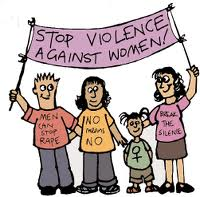
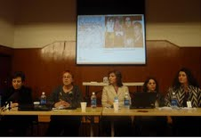
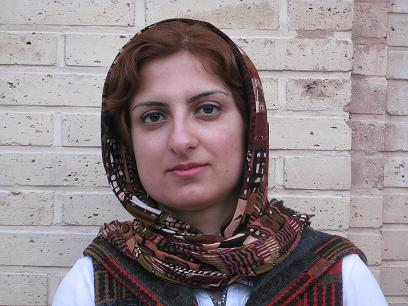

تغییر برای برابری
تغییر برای برابریامروز هشت مارس روز جهاني زن است. با توجه به فشارهاي ماه هاي اخير و بگيرو ببندهاي مستمر تصميم گرفتيم این بار با بروشور هاي اعتراض به لایحه ی خانواده و دفترچه هاي كمپين و كپي هايي از كتاب حقوق متهم به زبان ساده ( ابوالفتاح سلطاني ، مهنازپراكند) و دستبند با آرم كمپين به ميان مردم برويم و اين روز را گرامي بداريم .
پذيرش > واژه كليدها > صفحه بندی > ستون وسط
ستون وسط
مقالهها
-
 تجربه ای از حضور ما در شهر به مناسبت 8 مارس
تجربه ای از حضور ما در شهر به مناسبت 8 مارس
12 مارس 2010, بوسيلهى kooche -
 حفظ هویت مستقل جنبش زنان، همراه با دیگران درجنبش مدنی / پویا
حفظ هویت مستقل جنبش زنان، همراه با دیگران درجنبش مدنی / پویا
14 ژوئيه 2009, بوسيلهى pariکاملا امکان پذیر است که در حرکت های بزرگ اجتماعی، مثل راهپیمائی های بزرگ مسالمت آمیز یا تحصن ها، فعالان زنان در کنار شعارهای کلی تر مثل آزادی، شعارهایی را هم مبنی بر برابری های جنسیتی حمل کنند...
-
این فیلم حکایت مکرر سی ساله است / خلیل طالقانی
1 مارس 2011پرسش من این است که چقدر احتمال داردکه در همین ماه های پرتلاطم گروهی مشابه راه را بر یکی از مخالفان سیاسی مرد ببندند و وی را با الفاظی معادل "..احشه ، ...نده ،حروم زاده ،بی شرف، بوزینه، جرتون می دیم" خطاب کند؟ این تعرض و تجاوز به زنانگی از کجا برمی خیزد؟ چرا وقتی علیه بی حجابی بر دیوارها شعار می نوشتند به جای مثلاً "بی حجاب جاسوس/آمریکایی/ قانون شکن/منافق/ است" شاهدِ شعار "بی حجاب ..نده است" بودیم؟
-

نگاه های متفاوت به خشونت علیه زنان/ خشونت علیه زنان جرم محسوب می شود یا نه ؟
23 ژوئن 2011شورای عالی حقوق بشر اروپا کنوانسیونی را تدوین کرده است که در آن خشونت علیه زنان یک جرم علیه حقوق بشر قلمداد می شود. اما امکان اینکه کشورهائی بخش و یا بخشهائی از این قوانین را خذف کنند، کنوانسیون را ضعیف تر از آنچه که سازمان حقوق بشر خواهان آن بود، می کند.
-
 آزاده پورزند در مراسم گرامیداشت سیامک پورزند: امروز بیشتر از هر وقت دیگری انرژی دارم
آزاده پورزند در مراسم گرامیداشت سیامک پورزند: امروز بیشتر از هر وقت دیگری انرژی دارم
11 مه 2011لیلی پورزند: سه بار خبر مرگ پدر را شنیدم .یک بار زمانی که 12 ساله بودم و پدرم زندانی بود، پدر زنگ زد و گفت قرار است مرا اعدام کنندو از من خواسته اند وصیت کنم. بار دیگر زمانی بود که او را ربوده بودند و مانگران بودیم. پدر به من زنگ زد و گفت شما مرا مرده حساب کنید، من دیگر امیدی به زنده ماندن ندارم و بار سوم این بار بود که واقعیت داشت
-

پانل فعالان حقوق زن از ایران درکمیسیون موقعیت زنان: جنبش زنان ایران پانزده سال پس از پکن
8 آوريل 2010چهارشنبه چهارم ماه مارس 2010، سالن اصلی سل ویشن آرمی* شاهد برگزاری پانل فعالان حقوق زن از ایران بود که برای شرکت در پنجاه و چهارمین کنفرانس کمیسیون موقعیت زن به دعوت آیدوس به نیویورک رفته بودند. عنوان این پانل "جنبش زنان ایران پانزده سال پس از پکن" بود که در آن شیرین عبادی، رضوان مقدم، ناهید جعفری، فرانک فرید ،و پروین اردلان شرکت داشتند
-

بازگو کننده خواسته های زنان بوده ایم ؟/فروغ سمیع نیا
16 آوريل 2010اما اکنون که بیش از سه سال از فعالیت کمپین یک میلیون امضا می گذرد، سوال اینجاست که آیا این مجموعه توانسته به اهداف خود دست یابد و آیا این مسیری که طی شده همان است که کنشگران اش از ابتدا مد نظر داشته اند؟...
-
 تغییر ممکن است/ جلوه جواهری(26 روز پس از بازداشت کاوه مظفری)
تغییر ممکن است/ جلوه جواهری(26 روز پس از بازداشت کاوه مظفری)
4 اوت 2009, بوسيلهى pariآیا آنچه برایش مبارزه می کردیم به تعلیق درآمده یا شکلی دیگر به خود گرفته. به دنبال تکه های برابری در خیابان ها می گشتم و می اندیشیدم آنچه در خیابان است انباشته ی اندک اندک مبارزه های هر شهروندی برای برابری و دموکراسی است یا آنکه به یکباره رخ داده و یا تلفیقی از این دو.
-
 بهاره هدایت را آزاد کنید؛ درخواست ۴۵۵ تن از فعالان زنان، دانشجویی واجتماعی از قوه قضاییه
بهاره هدایت را آزاد کنید؛ درخواست ۴۵۵ تن از فعالان زنان، دانشجویی واجتماعی از قوه قضاییه
18 مارس 2014ما جمعی از فعالان مدنی و اجتماعی، همچنان خواستار اعمال بند ب ماده 10 قانون مجازات اسلامی مصوب 1392هستیم و از قاضی اجرای احکام پرونده بهاره هدایت می خواهیم تا پرونده وی را بر طبقوظیفه قانونی خود جهت اصلاح به دادگاه صادركننده حكم قطعي ارسال کرده و اصلاح آنرا طبق قانون جديد تقاضا كند. و از دادگاه صادرکننده حکم می خواهیم تا با لحاظقانون لاحق، و ماده 134 آن قانون در موضوع تعدد جرم، مجازات قبلي بهاره هدایت راتخفيف دهد. بر طبق قانون فعلی بهاره هدایت حتی با اطلاق مجازات اشد در جرایم متعددی که به وی نسبت داده شده فقط به 5 سال زندان می تواند محکوم شده باشد که ایندوره پنج ساله وی نیز رو به اتمام است و انتظار می رود که با اعمال قانون جدید ،ایشان هرچه سریع تر از زندان آزاد شوند...
-
در ترکیه قرار است دست شکسته در آستین نماند
14 اكتبر 2011چندیست که دولت ترکیه درصدد تدوین قوانین جدیدی به منظور مقابله با مسأله خشونت علیه زنان درترکیه برآمده و تدوین لایحه تمهیدات پیشگیرانه در جهت حمایت از زنان خشونت دیده را به پایان رسانیده است. گفتگوی وزیر سیاستهای اجتماعی و خانواده ترکیه فاطمه شاهین را با خبرنگار ان تی وی می خوانید.
0 | ... | 90 | 100 | 110 | 120 | 130 | 140 | 150 | 160 | 170 | ... | 450